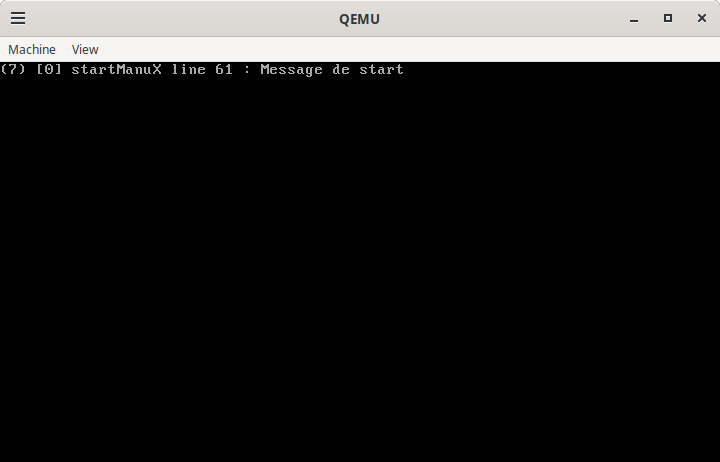
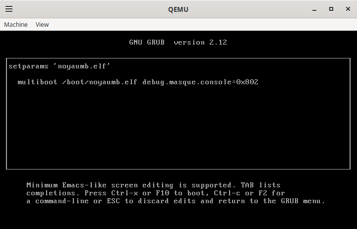
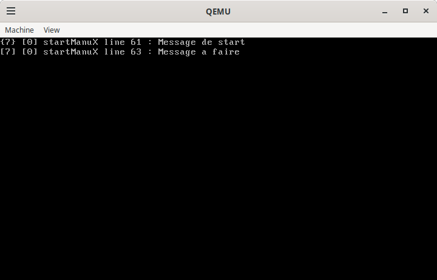

Les registres
La notion de registre permet de définir dans ManuX des structures de données pouvant être utilisées pour paramétrer les différents sous-systèmes.
L’objectif est de permettre en particulier de faire passer lors du boot au noyau des paramètres qui pourront écraser les valeurs par défaut de certaines variables.
On pensera par exemple à un masque de débogage ou à une adresse ip définie en dur dans le code mais que l’on pourra changer via la commande de boot.
À titre d’exemple, le noyau ManuX utilise une variable qui contient un masque permettant de définir quels messages sont affichés durant l’exécution du système.
Voici l’exécution du système alors que cette variable est initialisée à
sa valeur par défaut (0x3) qui n’active que l’affichage des messages
de démarrage et les éventuels messages d’erreur :

Voici maintenant le même noyau démarré puis exécuté avec une valeur différente de sorte à afficher les messages de type “à faire”. La première image montre l’utilisation du bootloader pour modifier la valeur de la variable :

Nous avons ici choisi la valeur 0x802 qui active l’affichage des
message “à faire” (0x800)et les messages de démarrage (0x2). L’image
suivante montre alors l’exécution du noyau :

C’est au travers de l’utilisation d’un registre que cette variable est manipulée ici.
Définition d’un registre
Un registre est une abstraction permettant de stocker des informations dans une structure arborescente. L’objectif est le paramétrage d’un (sous-)système donc les informations stockées sont simplement de courtes chaînes de caractères.
Le principe est que chaque entrée dans le registre (que nous appellerons un paramètre) est liée à une variable au travers d’une fonction de mise-à-jour de la variable.
La variable ne doit alors jamais être modifiée directement, mais uniquement au travers d’une modification du paramètre correspondant dans le registre. La variable sera alors mise-à-jour automatiquement au travers de la fonction associée.
Implantation d’un registre
Les registres sont définis dans
manux/registre.h
(dox) et implantés dans
lib/registre.c
(dox) .
La fonction principale pour peupler le registre est la suivante
void registreAffecterParametre(registre * reg,
char * valeur,
void * prive,
registreMiseAJour miseAJour,
...);
Le registre système
Le registre ManuX-Param est destiné à contenir les paramètres du noyau
ManuX.
Exemple d’utilisation
Un exemple d’utilisation simple du registre est donné dans
multiconf/registre.h
(dox) . Le code est dans le fichier
Dans ce fichier, 4 paramètres sont initialisés de différentes façons :
-
areçoit une valeur au démarage, puis sa fonction de mise-à-jour lui est affectée avec une valeur par défaut, qui n’est donc pas utilisée. -
breçoit une valeur au démarage, puis sa fonction de mise-à-jour lui est affectée sans valeur par défaut. -
cne reçoit pas de valeur au démarage, puis sa fonction de mise-à-jour lui est affectée avec une valeur par défaut, qui est donc utilisée. -
dreçoit une valeur au démarage, puis sa fonction de mise-à-jour lui est affectée avec une valeur par défaut, qui n’est donc pas utilisée, mais une nouvelle valeur lui est ensuite affectée, qui est celle finalement utilisée.
Par soucis de simplicité, on n’utilise pas ici les outils de boot pour passer des paramètres, mais cela ne change rien.